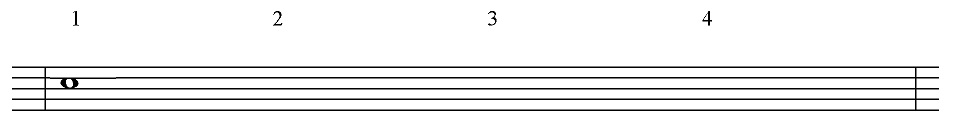
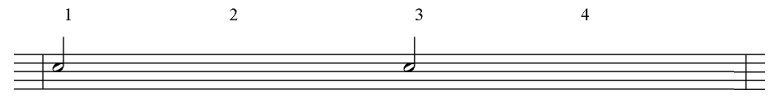
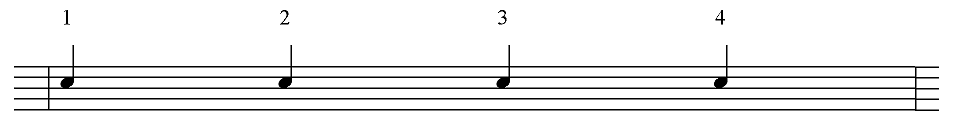
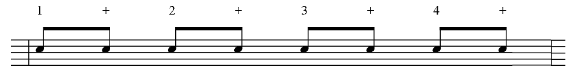
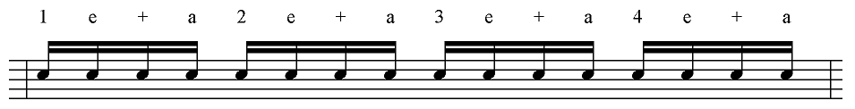

Counting out a beat is exactly where we have to start with music. Without a discernible rhythm, there is no order to music and nothing to dance to or nod our heads to.
Although all the other parts of music (like the melody) are important, as a drummer, you really have to focus on the rhythm.
Different notes have different time values. In other words, some notes last longer than other notes. Musicians mix different note values together to form interesting rhythms. To make it easier to learn these note values, we use the following counting method.
Semibreve (Whole Note)
The semibreve is the biggest note of them all. It lasts the longest of all the notes. You show a semibreve by drawing an empty note head.
The semibreve lasts for an entire four beats (in 4/4 time). In the example above, you would count “One-Two-Three-Four” as per the time signature, and play the snare drum at the same time you count “One”. You don’t need to play anything on beats (counts) “Two-Three-Four”.
Minim (Half Note)
It’s simple logic what comes next. A minim lasts half as long as a semibreve. So, if a semibreve lasts for four beats, a minim would last for two beats (in 4/4 time).
In this example, you would count “One-Two-Three-Four” and play the snare drum on counts “One” and “Three”. The minim looks like a semibreve, but has a stem attached to the note head.
Crotchet (Quarter Note)
A crotchet lasts half as long as a minim. Minims last for two beats, therefore a crotchet will last for one beat. Crotchets look like minims except that the note head is completely filled in.
Here you should play on every count.
Quaver (Eighth Note)
A quaver lasts half as long as a crotchet. If a crotchet lasts for one full beat (in 4/4 time), this means that a quaver will last for half a beat, and that there will be two quavers per beat. A quaver that falls between two main beats is indicated using a ‘+’ (pronounced “and” when counting).
In this example you would count “One-and-Two-and-Three-and-Four-and”. The snare drum is to be played on every count. A quaver looks like a crotchet, but with a flag attached to the stem.
Semiquaver (Sixteenth Note)
A semiquaver lasts half as long as a quaver. There will be four semiquavers in the space of one full beat. The semiquaver before the ‘+’ of the beat is indicated using an ‘e’. The semiquaver after the ‘+’ is indicated using an ‘a’. These extra counting parts are pronounced “ee” and “ah”.
Here you would count: “One-ee-and-ah-Two-ee-and-ah-Three-ee-and-ah-Four-ee-and-ah”. Play on every count. A semiquaver looks like a quaver, but has two flags instead of just one.
Note that when you use subdivisions (quavers and semiquavers) you should try to beam the notes together so they form groups relating to the beats in the bar. For example: join two quavers to indicate one beat.